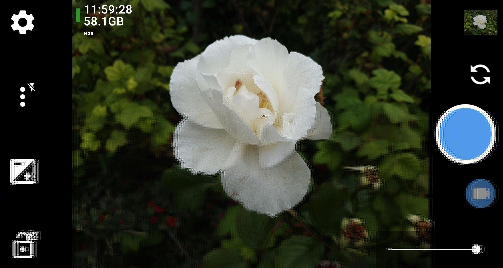

OpenCamWithMijServak

OpenCam е модифицирана версия на Open Camera с интеграция с MijServak за автоматично качване на сървър. Приложението поддържа изключване на локалното запазване и работа с временна директория при липса на връзка.
Основни промени и функционалности:
- Изключване на локално запазване: При активиране на
preference_disable_local_save=true снимките не се записват в DCIM/OpenCamera.
- Автоматично качване: Всички снимки се изпращат към сървъра веднага след заснемане.
- Временна директория: При неуспешно качване снимките и JSON метаданните се записват в /OpenCameraTmp/ (или в app-specific директория при Android 10+).
- Повторно качване: При стартиране на приложението всички чакащи снимки се опитват да бъдат качени отново, независимо от времето за повторен опит.
- Фоново продължаване: Активните качвания продължават да работят и при минимизиране на приложението чрез ForegroundService.
- Намаляване на таймаути: Оптимизирани са мрежовите таймаути за по-бърза реакция при липса на връзка.
- Уникални имена на файлове: Предотвратяват се конфликти при бързо заснемане без връзка чрез UUID имена.
- Атомарни JSON операции: Предотвратява се повреда на pending_images.json при едновременен достъп.
- Съвместимост с Android 10: Автоматично fallback към app-specific директория, когато коренът на външното хранилище е недостъпен.
- Разрешения: Поддържа се MANAGE_EXTERNAL_STORAGE (Android 11+) и POST_NOTIFICATIONS (Android 13+).
Версия: Release Build
Размер: 6.0 MB
Съвместимост: Android 5.0+